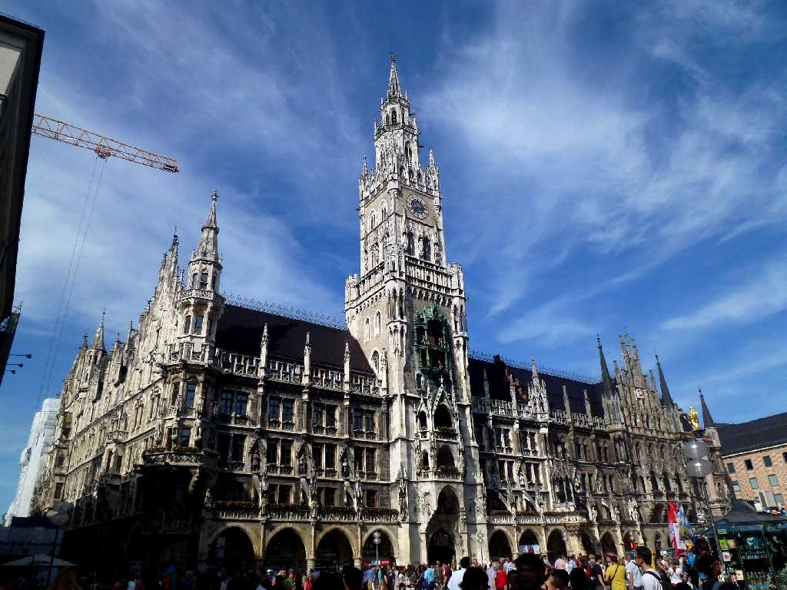
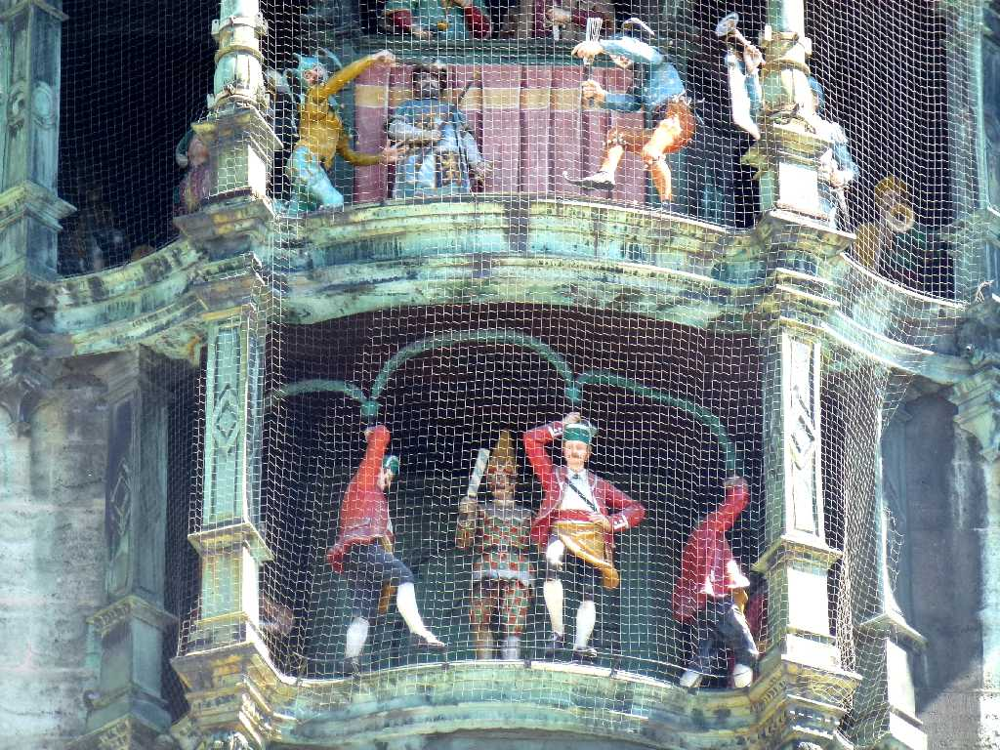
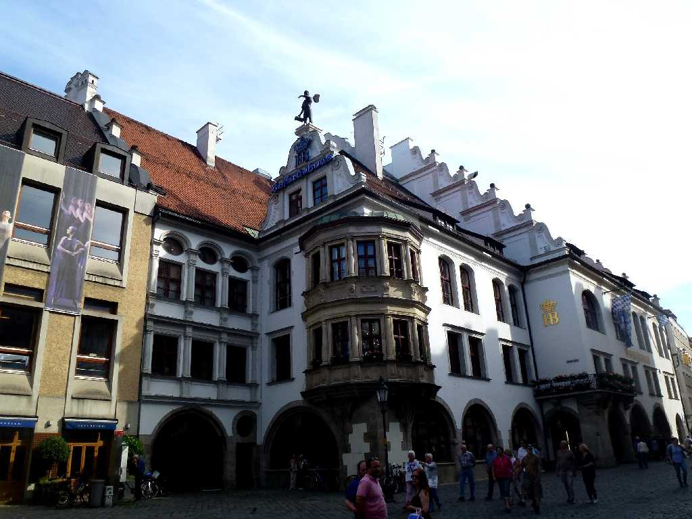
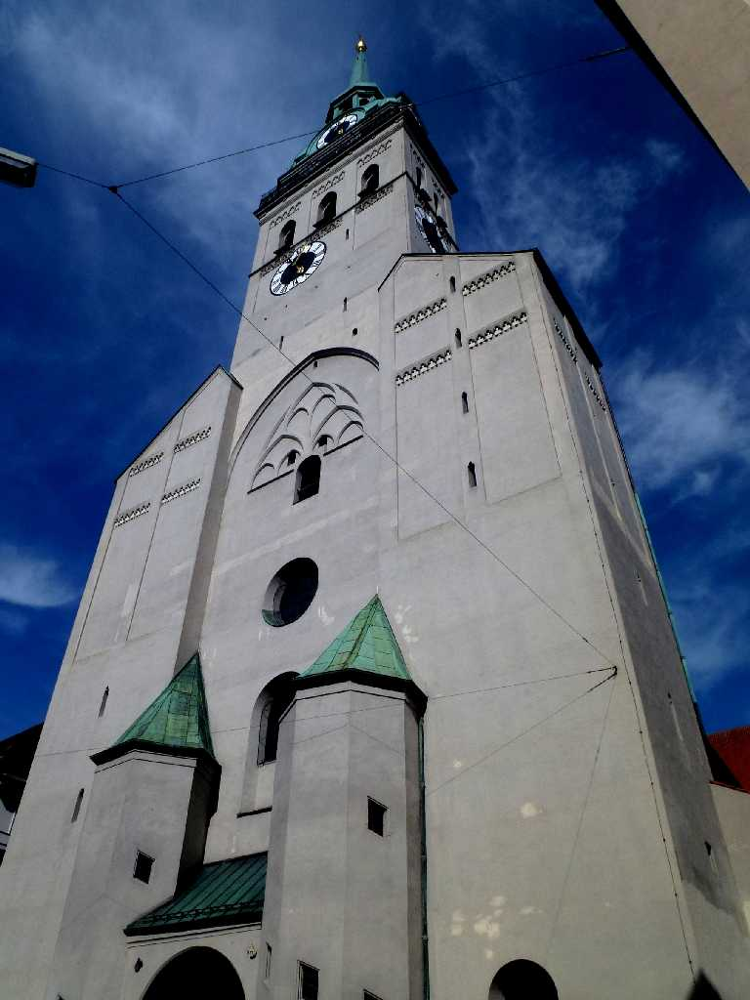
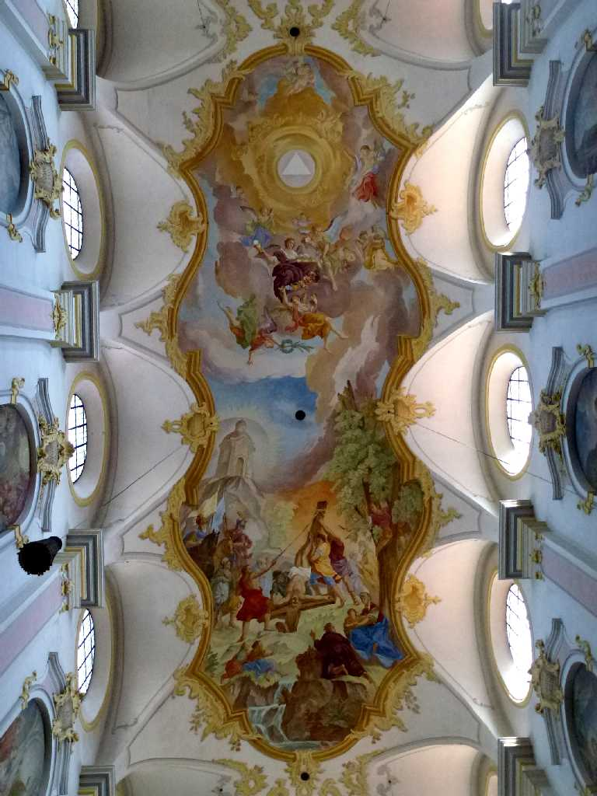
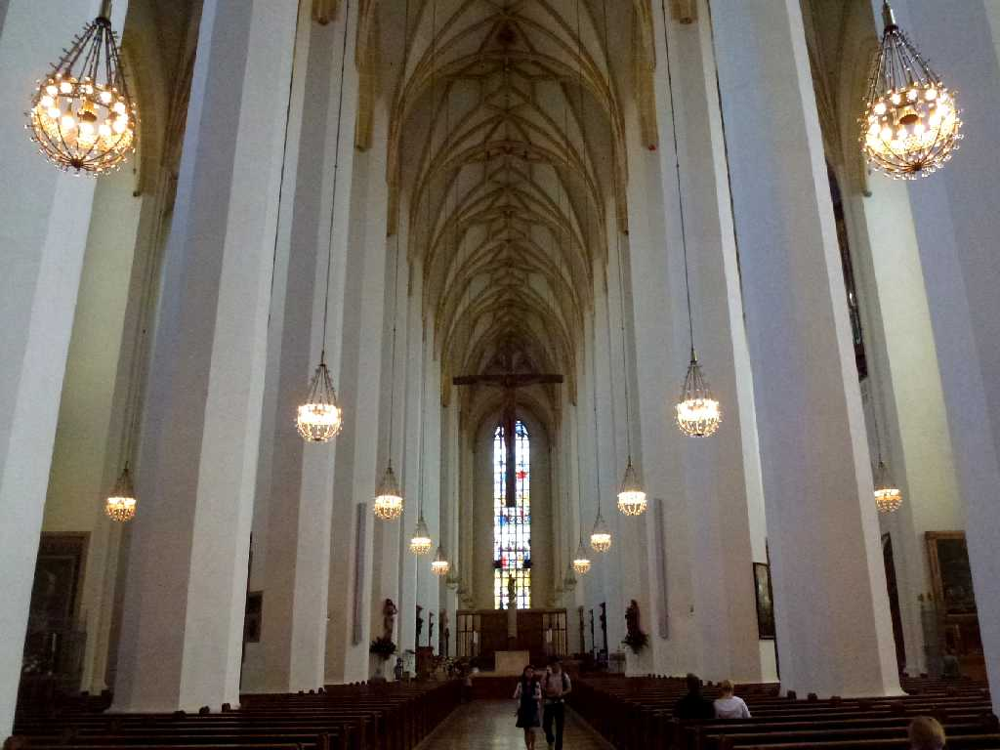
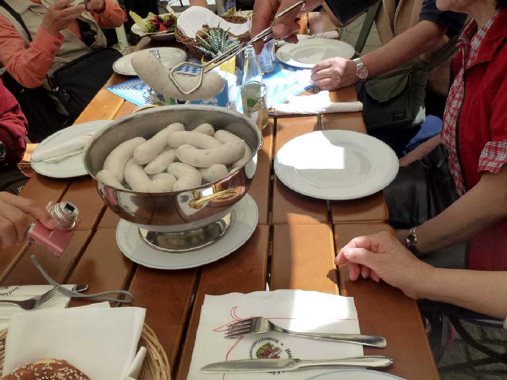
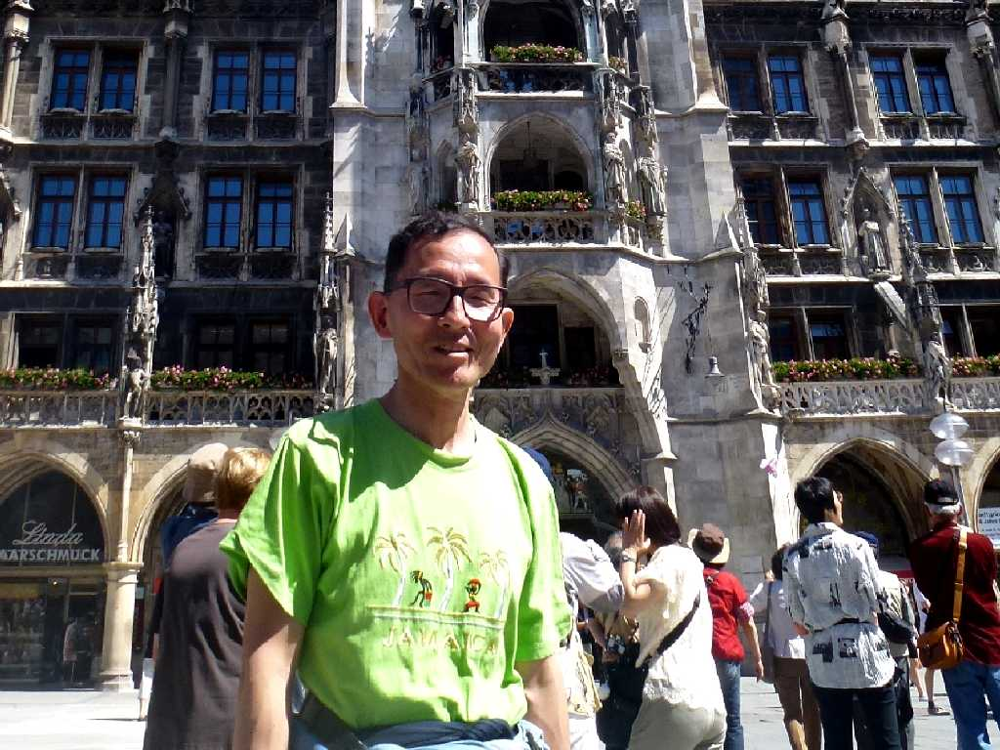

Neues Rathaus Marienplatz München
マリエン広場前の１８６７年に創られた新市庁舎

Neues Rathaus
バイエルン王の結婚式を表した新市庁舎の仕掛け時計

Hofbräuhaus
ミュンヘンのホフブロイハウスの１ℓグラスビールで乾杯 ８００ｍℓ程飲んで限界に達した
 
Peterskirche

Frauenkirche

Zum Franziskaner Weißwurst
ミュンヘン名物白ソーセージのお店ツムフランツィスカーナーで昼食

June 6 2014 Marienplatz München